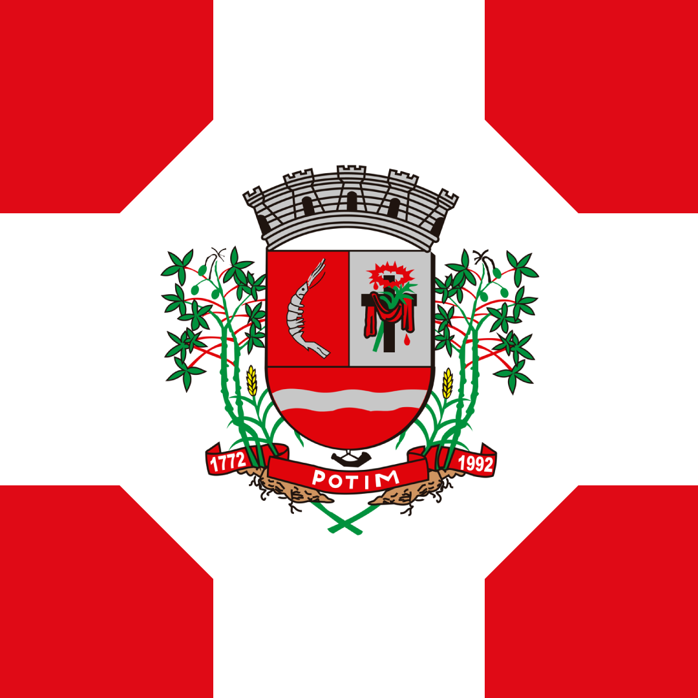

Potim - Geodex

Município de Potim
-
Populacão: 25.603 pessoas
-
Área: 44,643km²
-
Fundação: 23 de Dezembro de 1981
-
Distância da Capital: 172km
Potim é uma cidade localizada no Vale do Paraíba, interior de São Paulo, separada por apenas 2 quilômetros de Aparecida. Com uma população estimada de 22.453 habitantes em 2015, Potim teve seu povoamento inicial como uma vila de pescadores e trabalhadores rurais. Durante quase dois séculos, a cidade se desenvolveu ao redor da igrejinha do Senhor Bom Jesus. Em 1900, uma ponte foi inaugurada, ligando Potim a Aparecida. No entanto, a ponte original foi levada pela correnteza do rio Paraíba, sendo substituída por uma balsa. Em 1966, uma nova ponte de concreto foi inaugurada, que hoje tem restrições de tráfego. Em 1981, Potim se tornou um distrito, e em 1991, após um processo de emancipação aprovado pela Assembleia Legislativa, a cidade teve sua consulta plebiscitária e conquistou sua independência política e administrativa.